Source: AVEVA Operations Management Interface 2023 Training Manual, Module 13 – Scripting in Graphics
Covers creating an external content item for a PDF help document, building a layout with a PDF viewer, adding a Help button to the AdditionalTools symbol, and configuring the ShowGraphic() function to display content in a popup window. (pages 735–743)
In this lab, you will create an external content item configured to open an application help document using the PDF viewer. Then you will create a layout and assign the external content item to it. Finally, you will add a Help button to the AdditionalTools symbol and configure it to open the application help document in a popup window at runtime.
ShowGraphic() script function
ShowGraphic() function to show content in a popup window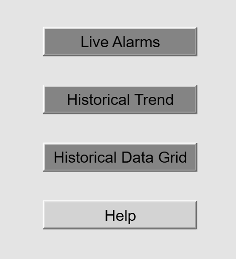
Reference: Module 13, Lab 27 — Create an External Content Item (page 736)
First, you will create an external content item that points to the application help PDF document. On the Graphics tab, in the Training \ External Content toolset, create a new external content item and name it ApplicationHelpPDF. Double-click it to open in the External Content Editor.
Click the ellipsis next to the URL or URI field and select Browse for file. The Open dialog box appears. Navigate to C:\Training\Other Files and select Training_Application_Help.pdf, then click Open. The path to the file appears in the URL or URI field.
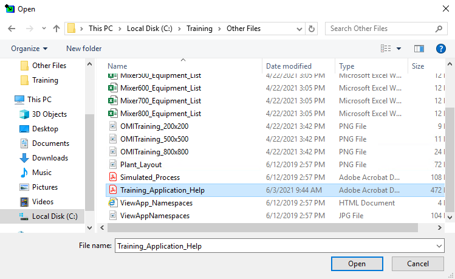
C:\Training\Other Files. The file Training_Application_Help.pdf (472 KB) is selected, ready to be linked as external content.For the Media Type field, click Suggest. The field automatically changes to application/pdf, which tells the system to use the built-in PDF viewer when displaying this content. Save and close the ApplicationHelpPDF external content item, and check it in.
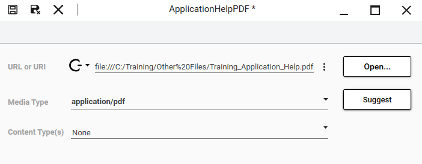
application/pdf — automatically suggested by the system based on the file extension.Reference: Module 13, Lab 27 — Create a Layout (pages 737–738)
With the external content item ready, you now need a layout that will host it. On the Graphics tab, in the Training \ Layouts toolset, create a new layout and name it UserHelp. Double-click to open it in the Layout Editor.
On the Toolbox tab, search for ApplicationHelpPDF and drag it into Pane1. The pane now shows a placeholder indicating it contains the external content — the system automatically recognizes the media type and assigns the PDF viewer application.
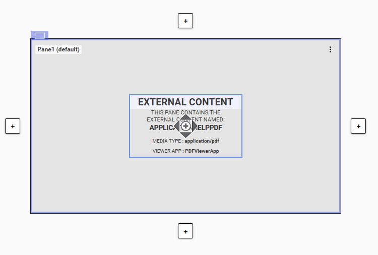
Click outside of Pane1 to display the layout properties on the Properties tab. Configure the following settings:
| Property | Value | Purpose |
|---|---|---|
| Behavior \ Initial State | Normal | Window opens in standard (non-maximized) state |
| Behavior \ Display in Taskbar | Unchecked | Popup window won't clutter the Windows taskbar |
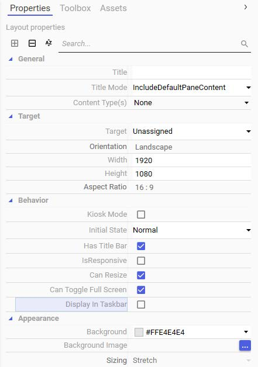
Save and close the UserHelp layout, and check it in. The layout is now ready to be referenced by a ShowGraphic() script call.
Reference: Module 13, Lab 27 — Add a Help Button (pages 739–741)
Next, you will add a fourth button to the AdditionalTools symbol you created in Lab 26. This button will be configured with the ShowGraphic() function to open the application help document as a popup window. Open the AdditionalTools symbol in the Graphic Editor and add a new button element below the Historical Data Grid button. Enter Help as the button text — the element is automatically named Button1.
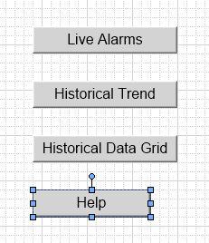
Now you will use alignment tools to make Button1 the same size as the other buttons. With Button1 selected on the canvas, press Shift and then select the Historical Data Grid button. The Historical Data Grid button shows blue selection handles (indicating it is the reference object), while Button1 shows white selection handles (the object to be resized).
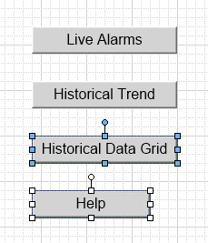
Click the Make Same Size alignment tool in the toolbar. Button1 instantly resizes to match the Historical Data Grid button. Click the drawing canvas to release the selections.
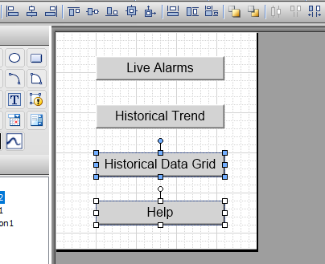
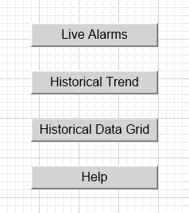
Double-click Button1 and add an Action Scripts animation. Ensure the Trigger type is set to On Left/Key/Touch Up. Enter the following script:
'Script body begins...
'Use the ShowGraphic() function to display a layout named as
'"UserHelp" in a window with Identity as "Help".
Dim graphicInfo as aaGraphic.GraphicInfo;
graphicInfo.Identity = "Help";
graphicInfo.GraphicName = "UserHelp";
'Simply customize the graphic size.
graphicInfo.RelativeTo = aaGraphic.RelativeTo.CustomizedWidthHeight;
graphicInfo.Width = 1200;
graphicInfo.Height = 600;
'Show graphic.
ShowGraphic( graphicInfo );
'Script body ends.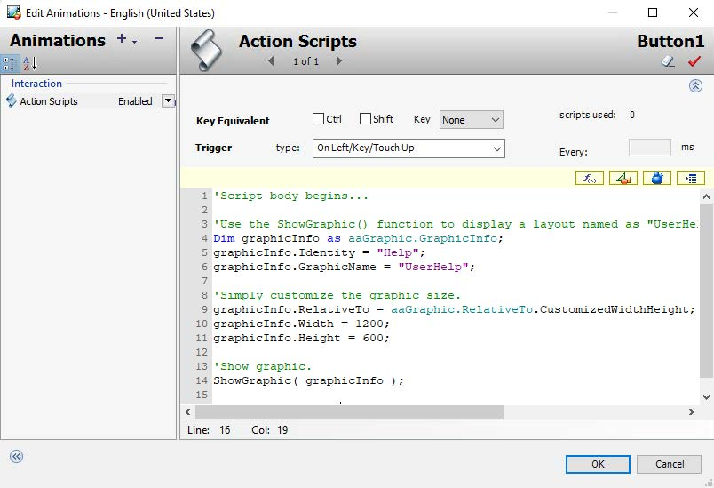
GraphicInfo object, sets its identity to "Help" and graphic name to "UserHelp", configures a custom window size of 1200×600 pixels, and calls ShowGraphic() to display the layout in a popup window.The ShowGraphic() function opens a layout in a separate popup window. The GraphicInfo object controls three important aspects:
HideGraphic() to close it later)RelativeTo.CustomizedWidthHeight lets you specify exact pixel dimensions (1200×600), rather than inheriting the layout's default sizeClick OK to close the Edit Animations dialog box. Save and close the AdditionalTools symbol, and check it in.
C:\Training folder that includes the script for this lab. The file name is Lab 27 - Using the ShowGraphic() Function.txt.
Reference: Module 13, Lab 27 — Test the ViewApp (pages 742–743)
Switch to the preview session and click the Display Slide-In Pane button on the right side of the ViewApp to show the AdditionalTools symbol. Notice the new Help button at the bottom of the pane, below the three existing buttons.
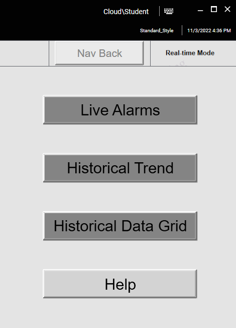
Click the Help button. The user help document opens in a popup window — a 1200×600 pixel window with the PDF viewer displaying the Training Application Users Guide. The popup appears over the main ViewApp window, which remains visible in the background.
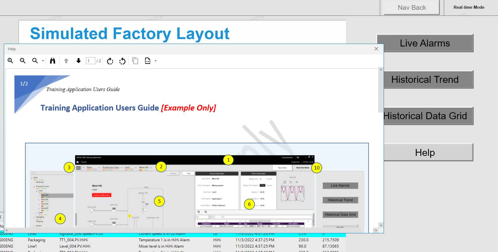
Close the popup window, then close the preview session. Close $ViewApp_Training and check it in.
application/pdf media typeShowGraphic() with a GraphicInfo object specifying identity, layout name, and custom dimensions (1200×600)| Function | Behavior | Best For |
|---|---|---|
ShowContent() | Displays content within a pane of the current layout | Toggle panels, tabbed panes, slide-in drawers |
ShowGraphic() | Opens a layout in a separate popup window | Help documents, detail views, modal dialogs |
An external content item references a file outside the Galaxy (such as a PDF, image, or web page) and specifies the media type so the system knows which viewer application to use when displaying it. It acts as a bridge between the ViewApp and third-party content.
The Media Type field tells the system which viewer application to use. For example, application/pdf triggers the built-in PDF viewer, while other MIME types would trigger different viewers. The Suggest button auto-detects the type from the file extension.
Unchecking Display in Taskbar ensures the popup window stays contained within the application rather than appearing as a separate entry in the Windows taskbar. This creates a cleaner, more cohesive user experience where the help window is clearly subordinate to the main application.
The Identity is a unique string that identifies the popup window. It can later be used with HideGraphic() to programmatically close a specific popup, even if multiple popups are open. It acts as a handle for window management.
ShowContent() displays content within a pane of the current layout — it stays inside the existing window structure. ShowGraphic() opens a layout in a separate, independent popup window. Use ShowContent() for toggle panels and ShowGraphic() for modal-style windows like help documents or detail views.
Source: AVEVA Operations Management Interface 2023 Training Manual, Module 13 – Scripting in Graphics, Lab 27
Pages 735–743